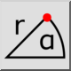

This is an automatic translation.
Polarna koordinata
Toolbar / Icon:


Menu: Hvatanje > Polarna koordinata
Shortcut: S, O
Commands: snappolar | so
Description
Definira točku unosom apsolutne ili relativne polarne koordinate.
Usage
- Pokrenite ovaj alat kada morate odrediti točku i to želite učiniti unosom polarne koordinate.
- Unesite polarnu koordinatu (polumjer i kut) u alatnu traku opcija i odaberite je li apsolutna koordinata ili relativna (u odnosu na relativnu nultu točku).
- Kliknite gumb OK ili pritisnite Enter za potvrdu unosa i postavljanje koordinate: